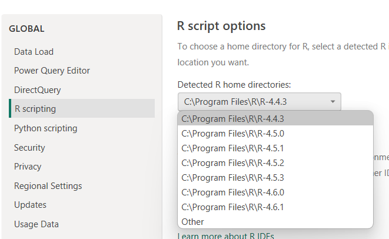
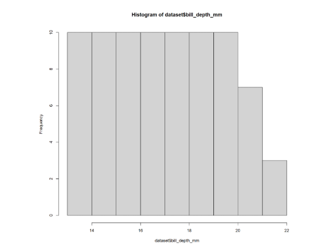
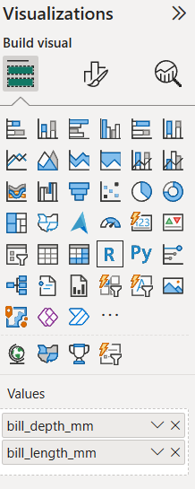
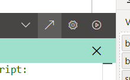

No feedback found for this session
R in Power BI
Power BI
PowerQuery
R
intermediate
Welcome
This is an intermediate-level session (🌶🌶) introducing some ways of using R scripts in Power BI.
The infrastructure for this session is unusually complicated, so please don’t be too disappointed if not everything we demonstrate in the session works for you. As a minimum, you’ll need the following to complete the session:
- Power BI Desktop
- a working desktop R installation of some kind
- prior experience of building simple dashboards in Power BI (loading data, basic wrangling, visualisations)
- happy writing R code
Setup
- create a new blank report in Power BI
- load the penguins dataset from the web (
https://quarto.org/docs/computations/palmer-penguins.csv) - anonymous access is fine if you get a content warning, and you might also need to ignore privacy checks for this file too - you might also rename that data set to
penguinsto save typing later on in the session
Overview
There are two places where R scripts can be used in Power BI:
- in PowerQuery to help ETL (see related session)
- in Power BI proper, to produce visuals
There’s a common approach though, which is basically:
- Power BI sends data to R as a data frame named
dataset - You write an R script directly in Power BI - or, in Power BI only, using an external IDE like Rstudio
- That script runs using your local R installation
- Power BI takes whatever it returns and uses it
R versions
You may need to set your preferred R version (and IDE) using the main options menu:

I’d be very careful with this, especially if you have multiple versions, because your version will likely determine which libraries you have available in R here, so proceed with caution. But probably the latest version would be most likely to work properly?
A first visualisation
Power BI uses R just to generate visuals. That means that the output of your script needs to make a png. There are lots of ways to do that, but the briefest is with base R’s plot().
- in your new report, insert an R visual - you may need to
Enable script visualsdepending on your Power BI version etc - we need to add some data before we can edit our R script. from the
penguinsdata, drag thebill_depth_mmcolumn to the R script visual values field - then, at the foot of the R script editor, plot a simple histogram using
hist(dataset$bill_depth_mm) - that should generate a simple (fairly dull) histogram plot for us on our report page:

More data
We can continue to add columns to the values field on our R script visual, and they’ll become available for use in R
- add the
bill_length_mmcolumn
- tweak your code to plot length against depth:
plot(dataset$bill_length_mm, dataset$bill_depth_mm)would be very suitable
Packages
Load packages in the usual way: I tend to do this by namespacing via package::function, but library(thingy) will work fine too. It’s using your local package library, so you may need to do a bit of dancing around between Rgui/Rstudio and Power BI if you need to add brand new packages.
- convert your base-R plot to use ggplot2
- now add
species, and plot the different species as different colours - yes, there’s no proper indenting, and it’s very annoying!
- it’s also usual for the visuals to come out very small on the report page, so a bit of
theme_minimal(base_size = 24)is probably warranted
A better way of writing R code

- use the arrow to open your code in your external IDE (like Rstudio)
- much better support for the code, at the price of some gumpf in the headers to handle the data loading
- also lets us understand how Power BI passes data over to R - basically just the columns you add to the visual
- try now adding a slicer on
islandto your report page, and repeating the open in Rstudio process - you’ll see the filtering of the data in action
Publishing
- try publishing your report to your own workspace
- then open in browser
- note there’s something funny going on here with packages. As the R code is now executed in the cloud, rather than on your machine, the remote R installation can only use a select list of packages
- it’s worth testing publishing frequently, as it reveals many subtle limitations of R use that appear to work flawlessly in Power BI Desktop
Limitations
create a new R visual, add any column as data, and then repeat your graph code. This time though load the data directly from source using
readr::read_csv("https://quarto.org/docs/computations/palmer-penguins.csv"). Now publish. What happens?try returning a table of data
library(gridExtra)
dataset |>
head() |>
grid.table(rows = NULL, theme = ttheme_minimal(base_colour = "brown", base_size = 20))- try some code that depends on a private package
KINDR::training_sessions(output_type = "tibble") |>
ggplot() +
geom_histogram(aes(x = lubridate::floor_date(start, unit = "months")))- do some plotly!